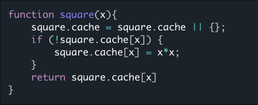
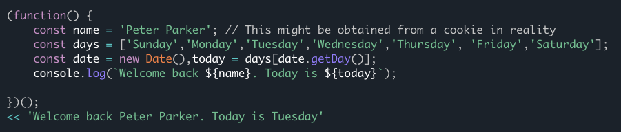

Notes Week 11
JavaScript: Novice to Ninja
Memoization
If a function takes some time to compute a return value, we can save the result in a cache property. Then if the same argument is used again later, we can return the value from the cache, rather than having to compute the result again. For example, say squaring a number was an expensive computational operation that took a long time. We could rewrite the square() function so it saved each result in a cache object that is a property of the function:
Initialization Code
An IIFE can be used to set up any initialization code that there’ll be no need for again. Because the code is only run once, there’s no need to create any reusable, named functions, and all the variables will also be temporary. An IIFE will be invoked once, and can set up any variables, objects and event handlers when the page loads. The following example logs a welcome message to the console, then eliminates all the temporary variables used in putting the message together:
